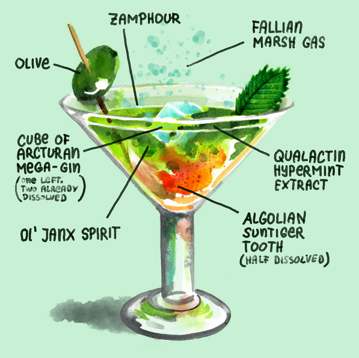

The best drink in existence, from "Hitchhiker's Guide to the Galaxy"
An intricate and dangerous cocktail, invented by Zaphod Beeblebrox.
Purported to make you feel like "having your brains smashed out by a slice of lemon wrapped round a large gold brick".
ingrediance
- Old Janx Spirit (1 bottle)
- Sea water from Santraginus V (1 measure)
- Acturan Mega-gin cubes (3 cubes)
- Fallian marsh gas (4 liters)
- Qualactin Hypermint extract (1 teaspoon)
- Angolian Suntiger tooth
- Zamphuor
- Olive (1 oliv)
Recipe instructions
- Take the juice from one bottle of Ol' Janx Spirit.
- Pour into it one measure of water from the seas of Santraginus V — Oh, that Santraginean seawater! Oh, those Santraginean fish!
- Allow four litres of Fallian marsh gas to bubble through it, in memory of all those happy hikers who have died of pleasure in the Marshes of Fallia.
- Allow four litres of Fallian marsh gas to bubble through it, in memory of all those happy hikers who have died of pleasure in the Marshes of Fallia.
- Over the back of a silver spoon float a measure of Qualactin Hypermint extract, redolent of all the heady odours of the dark Qualactin Zones, subtle, sweet and mystic.
- Drop in the tooth of an Algolian Suntiger. Watch it dissolve, spreading the fires of the Algolian Suns deep into the heart of the drink.
- Sprinkle Zamphuor.
- Add an olive.
- Drink... but... very carefully...
Return top
Return to main page